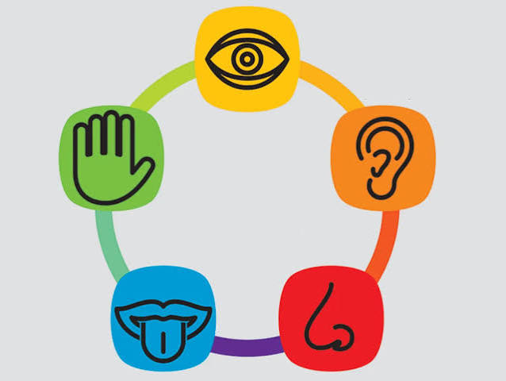
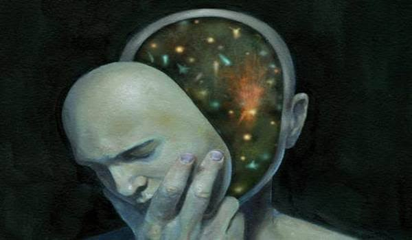
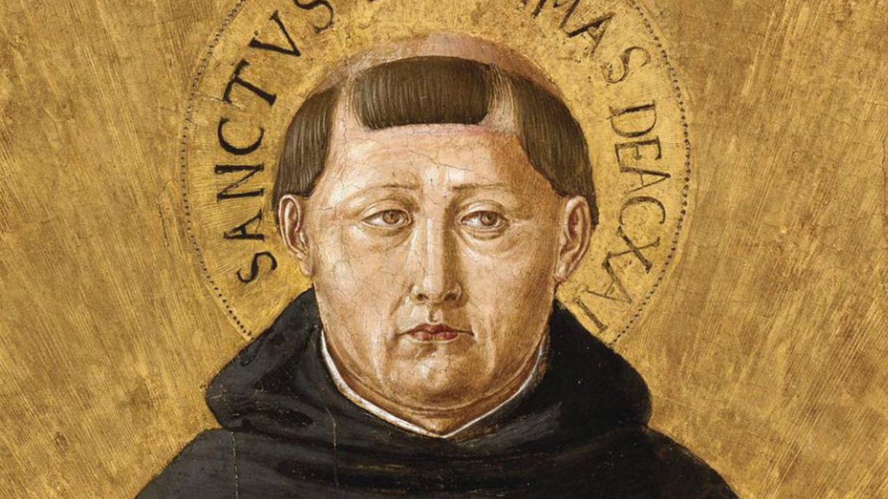

Moderna
Moderna
Antiga
Moderna
Contemporânea
Medieval
Racionalismo
Século XVII – XVIII- Ideia Central: Sustenta que a razão pura é a fonte principal do conhecimento, independente da experiência sensorial.
- Como Pensa: Os sentidos humanos podem nos enganar; apenas a lógica e as ideias inatas levam à verdade absoluta.
Principais Nomes: Descartes, Spinoza, Leibniz

Empirismo
Século XVII – XVIII- Ideia Central: Defende que todo conhecimento provém da experiência prática e das percepções dos sentidos.
- Como Pensa: A mente humana nasce como uma "folha em branco" (Tábula Rasa) e é preenchida ao longo da vida.
Principais Nomes: John Locke, David Hume, Francis Bacon
Estoicismo
Século III a.C. – Século II d.C.- Ideia Central: Busca pela paz de espírito através do autocontrole, da razão e da aceitação daquilo que não podemos mudar.
- Como Pensa: Não sofremos pelos acontecimentos em si, mas pela forma como reagimos a eles.
Principais Nomes: Sêneca, Marco Aurélio, Epicteto
Iluminismo
Século XVIII- Ideia Central: Defendia o uso da razão e da ciência para libertar a humanidade da ignorância, do dogmatismo e da tirania.
- Como Pensa: Promovia valores de liberdade individual, igualdade jurídica e progresso social.
Principais Nomes: Voltaire, Montesquieu, Rousseau, Kant

Existencialismo
Século XIX – XX- Ideia Central: Afirma que a existência precede a essência: primeiro existimos, e depois definimos quem somos pelas nossas escolhas.
- Como Pensa: O ser humano é totalmente livre e, portanto, 100% responsável por construir o próprio sentido da vida.
Principais Nomes: Sartre, Nietzsche, Camus, Kierkegaard

Escolástica
Século IX – XV- Ideia Central: Tentativa de conciliar a fé cristã com a razão filosófica (especialmente com o pensamento de Aristóteles).
- Como Pensa: A razão é uma ferramenta dada por Deus para nos ajudar a compreender os dogmas religiosos.
Principais Nomes: Tomás de Aquino, Santo Anselmo